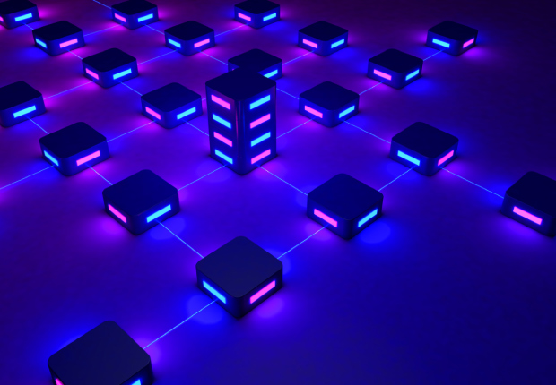

Hakkımızda
O Vod, merkeziyetsiz bir ağı benimseyerek sunucuların
oluşturduğu aşırı karbon tüketiminin önüne geçmeyi amaçlar. Açık kaynaklı yapısı sayesinde geribildirimlerle
gelişmeye devam ediyor. Platform olarak kullanıcının hakları, içerik haklarını gözetiyoruz ve oy birliği ile
platformun değişimlerinde söz sahibi olmasını sağlıyoruz.
Proje: O Vod - Berkay Gediz -
GitHub


 Giriş
Giriş